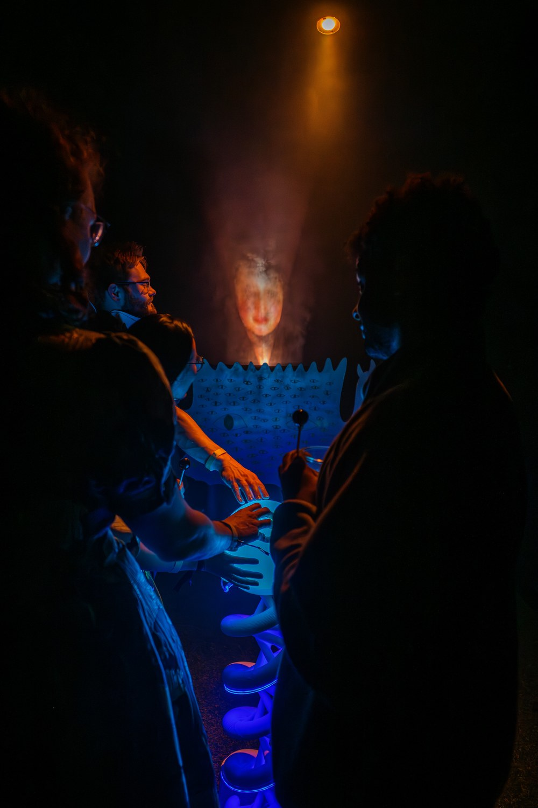
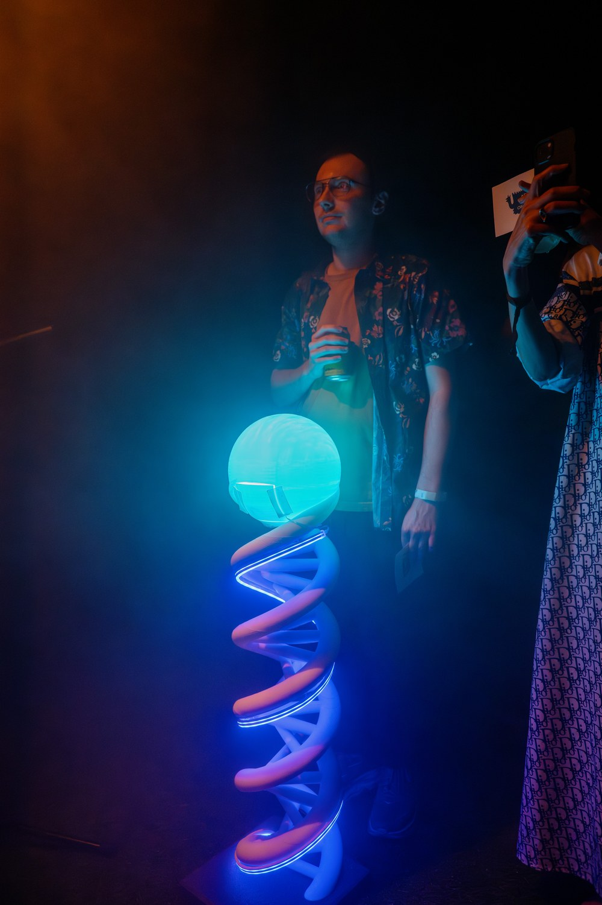
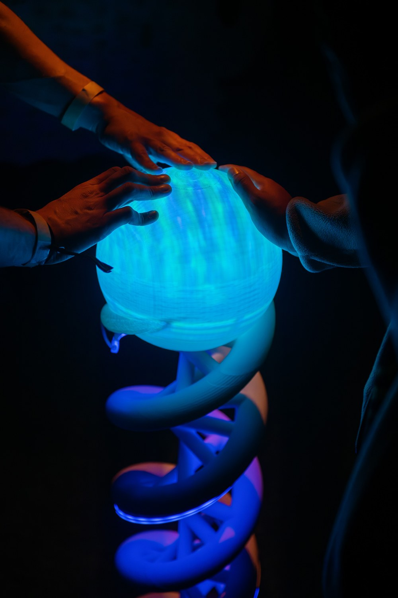
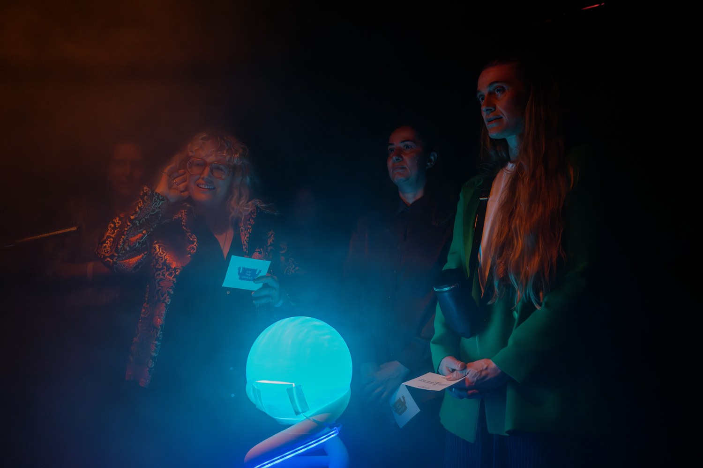

Join us for an evening of curiosity and revelry as we celebrate the release of the Emergence catalog. The night will move through moments of intimacy and spectacle: see yourself at the cellular level, consult experts on the frontier of synthetic biology and art, and immerse yourself in a dance performance that collapses time, space, and scale.
Saturday, March 28
7–10 p.m.
York Manor
Featuring:
After Life | 8 p.m.
Performance by Jas Lin, Vanessa Hernández Cruz and Piramon Kumnurdmanee with Henry Tan
DJ set | 8:30 p.m.
Claire L. Evans (YACHT)
Bites by Balo | Cash Bar
Emergence explores how artists and scientists are engaging with synthetic biology to imagine new forms of life, agency, and authorship. First an exhibition and now in print, the project gathers thinkers from a variety of backgrounds to explore how synthetic biology and art-making can energize and inform each other.
The Emergence catalog is designed by Saturated Grey and published in conjunction with the exhibition Emergence, one of more than seventy exhibitions and programs presented as part of PST ART: Art & Science Collide. PST ART is presented by Getty
__
Oracles appear as faces in the mist. Featuring Dr. Christina Agapakis, Dr. Lonny Brooks, Lauren (Ren) Ramlan, the Tissue Culture & Art Project (Oron Catts and Ionat Zurr), and Dr. Andrew Torrance. Produced by Henry Tan and Weeratouch Pongruengkiat. Hosted by Jade Fabello and Guy Rohkin.
(Please Paraphase these whole)



